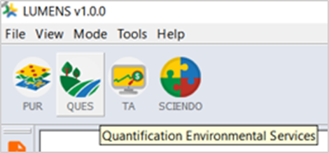
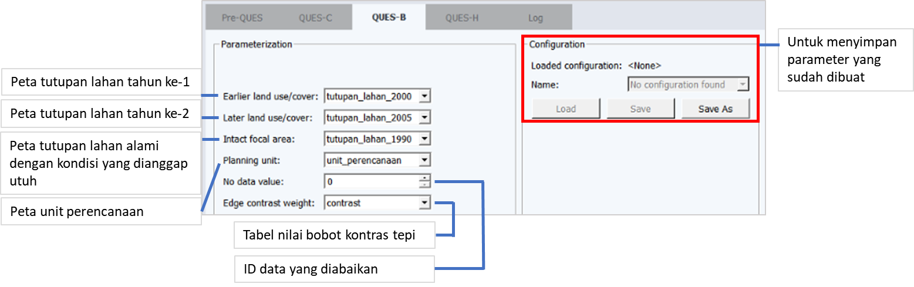
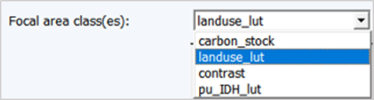
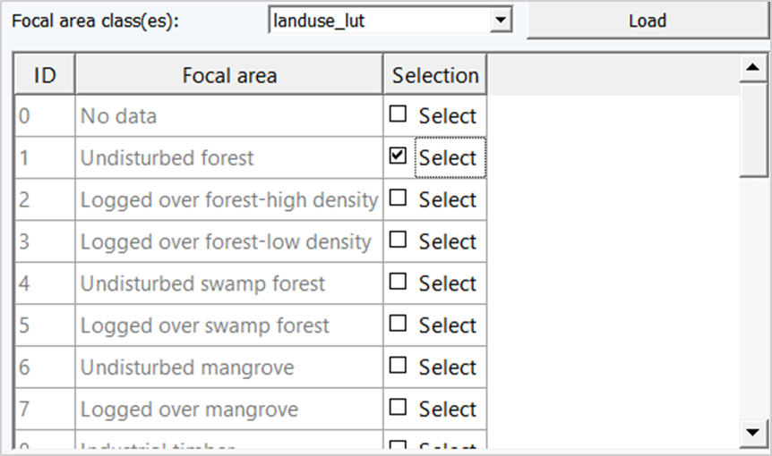
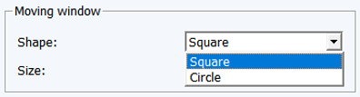

6.3 Proses Kerja
Proses Kerja
- Membuka jendela analisis QUES-B
Pilih ikon QUES yang ada di bagian kiri atas jendela LUMENS → QUES-B

Gambar 6.64 Ikon QUES untuk memulai QUES-B
- Mengisi jendela QUES-B
Setelah memilih ikon QUES akan terbuka jendela analisis QUES-B yang perlu diisi (Gambar 6.2)

Gambar 6.65 Fungsi dari masing-masing kolom dan panel pada jendela analisis QUES-B
- Mengisi kolom Earlier land use/cover
Kolom ini diisi dengan peta tutupan lahan pada tahun ke-1 (tahun yang lebih lama) akan dianalisis. Pilih  → tutupan_lahan_2000 (Gambar 6.3)
→ tutupan_lahan_2000 (Gambar 6.3)
Gambar 6.66 Penambahan peta tutupan lahan untuk mengisi kolom Earlier land use/cover
- Mengisi kolom Later land use/cover
Kolom ini diisi dengan peta tutupan lahan pada tahun ke-2 (tahun yang lebih baru) akan dianalisis. Pilih  → tutupan_lahan_2005 (Gambar 6.4)
→ tutupan_lahan_2005 (Gambar 6.4)

Gambar 6.67 Penambahan peta tutupan lahan untuk mengisi kolom Later land use/cover
- Mengisi kolom Intact focal area
Kolom Intact focal area diisi oleh peta tutupan lahan alami dengan memiliki kondisi yang dianggap utuh. Diasumsikan tutupan lahan yang utuh adalah tutupan lahan pada tahun paling awal dari data yang dimiliki, dalam contoh ini digunakan peta tutupan lahan tahun 1990.
Gambar 6.68 Pengisian kolom Intact focal area
- Mengisi kolom Planning unit
Kolom ini diisi dengan peta unit perencanaan. Pilih tombol  → unit_perencanaan (Gambar 6.6)
→ unit_perencanaan (Gambar 6.6)
Gambar 6.69 Pengisian kolom Planning unit
- Mengisi kolom No data value
Kolom ini berisi ID tabel dari data tabular acuan tutupan lahan yang berisi No Data. No Data perlu dituliskan atau disertakan dalam analisis ini untuk menganulir tutupan awan yang ada pada data tutupan lahan yang akan dianalisis. Dalam contoh ini, ID awan pada tabel acuan tutupan lahan adalah ‘0’.
- Mengisi kolom Edge contrast weight
Edge contrast weight atau tabel nilai bobot kontras tepi, berfungsi untuk menunjukkan perbedaan antara kelas tutupan yang masih dianggap utuh atau area focal (focal areal) dengan tutupan lainnya. Kolom ini diisi dengan cara, pilih tombol  → contrast (Gambar 6.7)
→ contrast (Gambar 6.7)
Gambar 6.70 Pengisian kolom Edge contrast weight
- Mengisi kolom Focal area class
Kolom Focal area class bertujuan untuk memilih kelas tutupan lahan yang akan dijadikan sebagai focal area dari Intact focal area yang telah dipilih. Pilih tombol  → landuse_lut→ Load → Hingga muncul tabel (Gambar 6.8). Berikan centang pada tabel Selection, untuk kelas Focal area yang dipilih (Gambar 6.9).
→ landuse_lut→ Load → Hingga muncul tabel (Gambar 6.8). Berikan centang pada tabel Selection, untuk kelas Focal area yang dipilih (Gambar 6.9).

Gambar 6.71 Kelas tutupan lahan yang dipilih sebagai Focal area class

Gambar 6.72 Daftar kelas tutupan lahan dari Focal area class yang dipilih
- Mengisi panel Moving Window
Panel Moving Window berfungsi untuk memilih jenis bentuk jendela bergerak dan ukurannya yang nantinya akan ditampilkan pada dokumen hasil analisis QUES-B. Shape →  → Cirlce atau Square→ Size → 1000 (atau tentukan ukuran lainnya). Satuan ukuran dinyatakan dalam meter. Apabila bentuk (Shape) yang dipilih adalah lingkaran (Circle), maka ukuran yang ditentukan akan menjadi ukuran radius. Ketika jendela berpindah berbentuk bujur sangkar, Panjang sisi jendela akan disesuaikan dengan angka Size.
→ Cirlce atau Square→ Size → 1000 (atau tentukan ukuran lainnya). Satuan ukuran dinyatakan dalam meter. Apabila bentuk (Shape) yang dipilih adalah lingkaran (Circle), maka ukuran yang ditentukan akan menjadi ukuran radius. Ketika jendela berpindah berbentuk bujur sangkar, Panjang sisi jendela akan disesuaikan dengan angka Size.

Gambar 6.73 Pengisian panel Moving Window
- Mengisi kolom Sampling grid size
Kolom ini berfungsi untuk menentukan ukuran unit agregasi yang akan dianalisis. Semakin besar ukuran yang digunakan, tingkat kedetilan kurva DIFA yang dihasilkan di akhir proses akan semakin rendah. Untuk mengisi kolom ini, dapat dilakukan dengan cara menuliskan angka secara langsung pada kolom Sampling grid size (Gambar 6.11)
Gambar 6.74 Pengisian kolom Sampling grid size
- Memulai proses analisis
Jika seluruh kolom yang ada di panel Moving Window dan panel Parameterization kerta kolom Sampling grid size telah terisi dengan benar, mulai analisis dengan pilih tombol Process. Tunggu hingga proses analisis selesai dan muncul jendela pemberitahuan jika proses analisis QUES-B telah selesai.
Created with the Personal Edition of HelpNDoc: Full-featured EBook editor